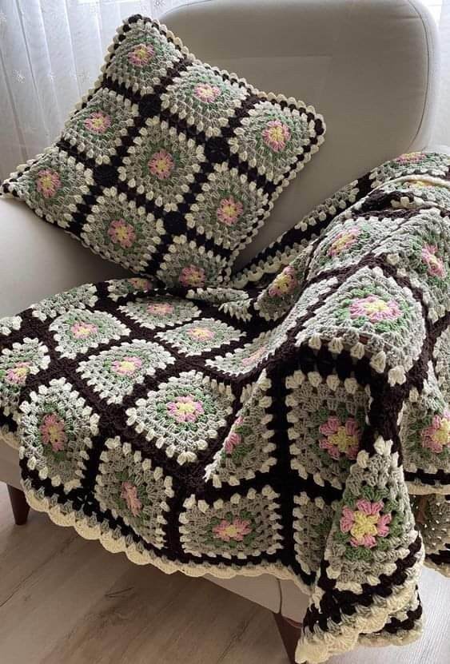
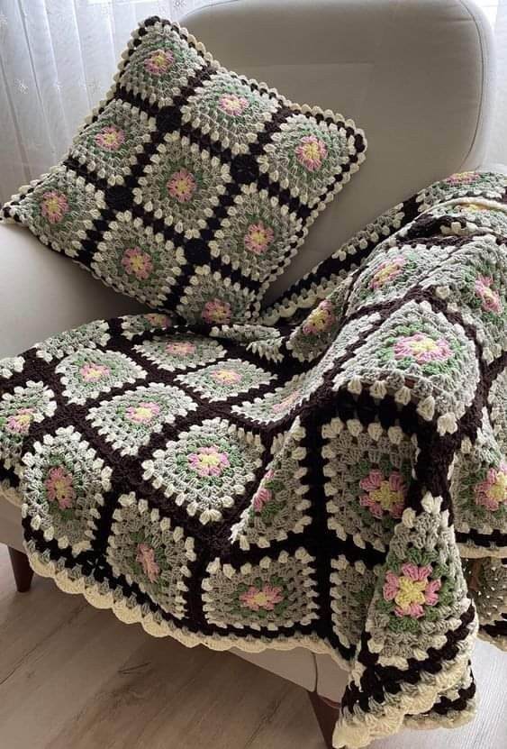

Minimalistisk
Minimalistisk indretning handler om enkelhed, rene linjer og at skabe ro i hjemmet ved at skære ned på unødvendige ting. Fokus er på funktionelle møbler af høj kvalitet og neutrale farver, der fremhæver rummets naturlige lys. Ved at reducere rod og kun beholde det essentielle, opnår man en harmonisk og rummelig atmosfære. Denne stil giver et stilrent udtryk, hvor hvert element har sin plads og formål, hvilket skaber et både praktisk og æstetisk hjem.


 
